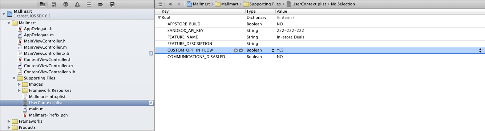

If you haven't done it yet be sure to check out the iOS Quick Start Guide to get the SDK installed and running.
This document describes how to use the Gimbal framework to develop iOS applications that can benefit from contextual Services.
The QLContextCoreConnector must be enabled prior to using any other Gimbal features.
All calls to the API will return failures with a disabled status message until this step is complete.
The enableFromViewController:success:failure: method is used to enable the SDK for use by the end user.
Note: This call is asynchronous and use objective-c blocks to return results when they are available.
QLContextCoreConnector *contextCoreConnector = [QLContextCoreConnector new];
[contextCoreConnector enableFromViewController:self.window.rootViewController
success:^{
NSLog(@"Gimbal enabled");
}
failure:^(NSError *error) {
NSLog(@"Failed to initialize gimbal %@", error);
}];
The checkStatusAndOnEnabled:disabled: method allows your application to ensure that it has been previously enabled.
Note: This call is asynchronous and use objective-c blocks to return results when they are available.
[contextCoreConnector checkStatusAndOnEnabled: ^(QLContextConnectorPermissions *contextConnectorPermissions) {
NSLog(@"Already enabled");
}
disabled:^(NSError *error) {
NSLog(@"Is not enabled");
}];
[contextCoreConnector deleteAllUserDataAndOnSuccess:^{
NSLog(@"User data deletion SUCCESS");
}
failure:^(NSError *error) {
NSLog(@"User data deletion FAILURE: %@", error );
}];
By default, when you enable the SDK using enableFromViewController:success:failure: a Gimbal branded dialog containing the end user consent, privacy notice and terms of service will be presented to the end user.
However, you have the choice to display your own privacy notice and end user opt-in consent in lieu of the Gimbal branded dialog.
Important In order to enable this feature, you must submit a request to get an approval and you will be bound by the "White Label Mode" terms within the Gimbal Developer Agreement.
Once your request is approved, you will be able to use this feature by adding a property CUSTOM_OPT_IN_FLOW: YES to UserContext.plist file.

self.contextPlaceConnector = [[QLContextPlaceConnector alloc] init];
Implement didGetPlaceEvent method to listen for place events. Gimbal SDK will call this method when it detects Entry/Exit for a place
- (void)didGetPlaceEvent: (QLPlaceEvent *)placeEvent
{
// do something with the place event
}
The following fields are available in the QLPlaceEvent passed to the listener:
| Field Name | Description |
|---|---|
| placeType | QLPlaceTypeOrganization refers to places created in Context Console and applies to all of your users. QLPlaceTypePrivate is created locally on the phone and only applies to a single user. |
| eventType |
QLPlaceEventTypeAt means that the user has arrived at the place
QLPlaceEventTypeLeft means that the user has just left the place.
|
| Place |
The QLPlace object associated tot he event.
|
| Time | The time of the event in milliseconds since 1970 (See System.currentTimeMillis()) |
The Gimbal SDK does not support place monitoring on devices such as the iPhone 3GS due to the hardware not being battery efficient to continually monitor geofences in the background. To determine if the device supports place monitoring, call the "isPlaceMonitoringAvailable" on the QLContextPlaceConnector to see if the current device supports place monitoring.
We detect "AT" events more quickly than "Leave" events. The system needs sufficient evidence to promote a "Leave" event to be statistically accurate. False "Leave" events happen because location fixes on today’s smartphones tend to bounce around. (Open a map application on your phone and watch the blinking cursor bounce around.) We work to eliminate these inaccuracies to ensure your end-user does not receive multiple incorrect events.